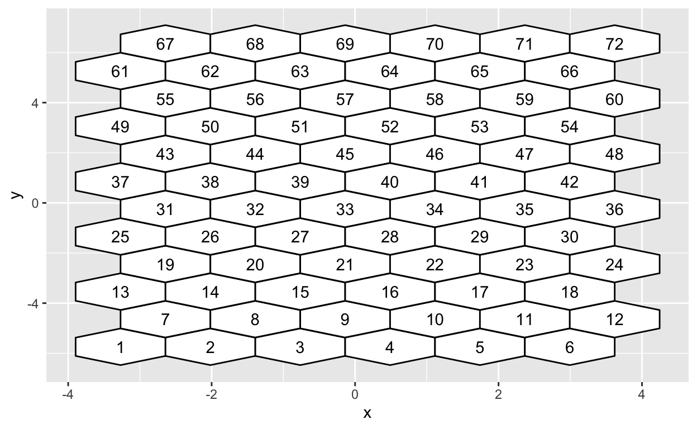
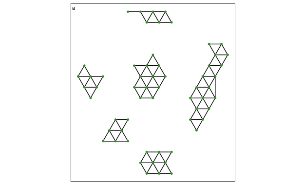
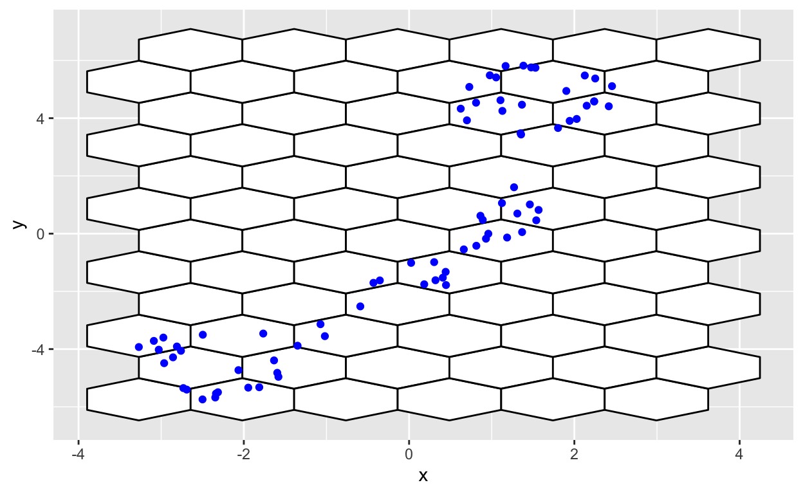

Non-linear dimension reduction (NLDR) methods provide a low-dimensional representation of high-dimensional data (pD) by applying a non-linear transformation. However, the complexity of the transformations and data structures can create wildly different representations depending on the method and (hyper)parameter choices. It is difficult to determine whether any of these representations are accurate, which one is the best, or whether they have missed important structures. The R package quollr has been developed as a new visual tool to determine which method and which (hyper)parameter choices provide the most accurate representation of high-dimensional data. The triangular_3d_data data from the cardinalR package is used to illustrate the algorithm and its application within the package.
This paper presents the R package, quollr which introduce a new visual tool in determining which NLDR technique and which (hyper)parameter choice gives most accurate representation of high-dimensional data. The methodology of the algorithm is explained in cite the methodology paper. Furthermore, the quollr package enables users to perform hexagonal binning (Carr et al. 2023), resulting in the generation of regular hexagons. The software is available from the Comprehensive R Archive Network (CARN) at https://CRAN.R-project.org/package=quollr.
The paper is organized as follows. In next section, introduces the implementation of quollr package on CRAN, including demonstration of the package’s key functions and visualization capabilities. We illustrate the algorithm’s functionality to study about clustering data structure in Application section, and describe a visual heuristic to describe parameter selection. Finally, we give a brief conclusion of the paper and discuss potential opportunities for use of our algorithm.
The package can be installed from CRAN:
install.packages("quollr")The development version can be installed from GitHub:
devtools::install_github("JayaniLakshika/quollr")Understanding the dependencies of the quollr package is essential for smooth operation and error prevention. The following dependencies refer to the other R packages that quollr relies on to execute its functions effectively.
$quollr
[1] "dplyr" "ggplot2" "grid" "interp"
[5] "langevitour" "proxy" "rlang" "rsample"
[9] "stats" "tibble" "tidyselect" The following demonstration of the package’s functionality assumes quollr has been loaded. We also want to load the built-in data sets s_curve_noise_training and s_curve_noise_umap.
s_curve_noise_training is a \(3\text{-}D\) S-curve data set with additional four noise dimensions which is used to train the model. s_curve_noise_umap is the UMAP \(2\text{-}D\) embedding for s_curve_noise_training data set. Each data set contains a unique ID column.
The algorithm begins by scaling NLDR data to a standard scale using the gen_scaled_data() function. This function standardizes the data and provides the original limits of embeddings and the aspect ratio.
The mains steps for the algorithm can be executed by the main function fit_highd_model(), or can be run separately for more flexibility. When constructing the \(2\text{-}D\) model, the user can choose either to fit the \(2\text{-}D\) model with hexagonal bin centroids or bin means using is_bin_centroid argument.
If a user would like to perform steps of the algorithm themselves, additional user input will be needed for the function that perform each step. For example, if the user wishes to use already binning data, the extract_hexbin_centroids() function can be used directly.
The number of bins along the x-axis, the ratio of the ranges of the original embedding components, the buffer amount as a proportion of data, and if is_rm_lwd_hex = TRUE, benchmark value to remove low density hexagons are parameters that will be determined within fit_highd_model(), if they are not provided. They are created as they are needed throughout the following example. The function fit_highd_model() provides the fitted model in \(2\text{-}D\), and \(p\text{-}D\).
fit_highd_model(
training_data = s_curve_noise_training,
emb_df = s_curve_noise_umap_scaled,
bin1 = 12,
r2 = r2,
q = 0.07,
is_bin_centroid = TRUE,
is_rm_lwd_hex = TRUE,
benchmark_to_rm_lwd_hex = NULL,
col_start_highd = "x"
)$df_bin
# A tibble: 37 × 8
hb_id x1 x2 x3 x4 x5 x6 x7
<int> <dbl> <dbl> <dbl> <dbl> <dbl> <dbl> <dbl>
1 27 -0.706 1.70 -1.65 0.00918 0.00261 -0.0236 -0.00199
2 28 -0.214 1.45 -1.98 -0.00966 -0.00370 0.0573 0.000307
3 40 0.356 1.74 -1.89 0.0127 -0.00773 -0.0219 -0.000757
4 50 -0.209 0.453 -1.98 0.0185 0.0189 -0.0999 -0.00412
5 52 0.00161 1.14 -2.00 0.00206 -0.00940 -0.0974 -0.00796
6 61 -0.671 0.0922 -1.74 -0.00458 0.0127 -0.0613 -0.00643
7 62 -0.375 0.328 -1.89 -0.00226 -0.00651 -0.0291 0.00120
8 74 -0.175 0.0562 -1.98 0.00204 -0.00179 0.0112 -0.00111
9 75 0.325 0.0821 -1.95 0.00292 0.0197 -0.0165 -0.000881
10 127 0.704 0.454 -0.290 -0.00394 0.0118 -0.00941 -0.00348
# ℹ 27 more rows
$df_bin_centroids
# A tibble: 37 × 5
hexID c_x c_y std_counts drop_empty
<int> <dbl> <dbl> <dbl> <lgl>
1 27 0.127 0.0295 1 FALSE
2 28 0.226 0.0295 0.2 FALSE
3 40 0.275 0.115 0.6 FALSE
4 50 0.0287 0.200 0.2 FALSE
5 52 0.226 0.200 0.2 FALSE
6 61 -0.0207 0.286 0.2 FALSE
7 62 0.0780 0.286 0.8 FALSE
8 74 0.0287 0.371 0.4 FALSE
9 75 0.127 0.371 0.2 FALSE
10 127 0.522 0.713 0.4 FALSE
# ℹ 27 more rowsConstructing the \(2\text{-}D\) model mainly contains (i) binning data, (ii) obtaining bin centroids, and (iii) indicating neighbors by line segments connecting centroids.
The configurations of the hexagonal grid is defined by the number of bins in each direction. To find the number of bins along the y-axis, calc_bins_y() is used. This function takes as input the number of bins along the x-axis, the ratio of the ranges of the original embedding components, and the buffer amount as a proportion of the data. Additionally, this function provides the bin width.
calc_bins_y(
bin1 = 12,
r2 = r2,
q = 0.07
)$bin2
[1] 27
$a1
[1] 0.09596332Points are allocated to the bins they fall into based on the nearest centroid. The main steps of the hexagonal binning algorithm can be executed using the hex_binning() function, or they can be run separately for greater flexibility. The parameters used within hex_binning() include the scaled NLDR data, the number of bins along the x-axis, the ratio of the ranges of the original embedding components, and the buffer amount as a proportion of the data. The output is an object of the hex_bin_obj class, which contains the number of bins in each direction, the coordinates of the hexagonal grid starting point, the details of bin centroids, the coordinates of bins, embedding components with their corresponding hexagon IDs, hex bins with their corresponding standardized counts, the total number of bins, the number of non-empty bins, and the points within each hexagon.
hex_binning(
data = s_curve_noise_umap_scaled,
bin1 = 12,
r2 = r2,
q = 0.07
)$bins
[1] 12 27
$start_point
[1] -0.070000 -0.141359
$centroids
# A tibble: 324 × 3
hexID c_x c_y
<int> <dbl> <dbl>
1 1 -0.07 -0.141
2 2 0.0287 -0.141
3 3 0.127 -0.141
4 4 0.226 -0.141
5 5 0.325 -0.141
6 6 0.423 -0.141
7 7 0.522 -0.141
8 8 0.621 -0.141
9 9 0.719 -0.141
10 10 0.818 -0.141
# ℹ 314 more rows
$hex_poly
# A tibble: 1,944 × 3
hex_poly_id x y
<int> <dbl> <dbl>
1 1 -0.07 -0.0860
2 1 -0.118 -0.114
3 1 -0.118 -0.169
4 1 -0.07 -0.197
5 1 -0.0220 -0.169
6 1 -0.0220 -0.114
7 2 0.0287 -0.0860
8 2 -0.0193 -0.114
9 2 -0.0193 -0.169
10 2 0.0287 -0.197
# ℹ 1,934 more rows
$data_hb_id
# A tibble: 75 × 4
UMAP1 UMAP2 ID hb_id
<dbl> <dbl> <int> <int>
1 0.0804 0.320 1 62
2 0.739 1.00 2 165
3 0.840 1.08 3 178
4 0.167 0.0432 4 27
5 0.263 0.398 6 76
6 0.838 2.01 7 310
7 0.734 0.972 8 165
8 0.627 0.721 9 128
9 0.810 1.01 11 178
10 0.903 1.87 12 299
# ℹ 65 more rows
$std_cts
# A tibble: 45 × 3
hb_id n std_counts
<int> <int> <dbl>
1 27 5 1
2 28 1 0.2
3 38 1 0.2
4 40 3 0.6
5 50 1 0.2
6 52 1 0.2
7 61 1 0.2
8 62 4 0.8
9 64 1 0.2
10 74 2 0.4
# ℹ 35 more rows
$tot_bins
[1] 324
$non_bins
[1] 45
$pts_bins
# A tibble: 45 × 2
hexID pts_list
<int> <named list>
1 62 <int [75]>
2 165 <int [75]>
3 178 <int [75]>
4 27 <int [75]>
5 76 <int [75]>
6 310 <int [75]>
7 128 <int [75]>
8 299 <int [75]>
9 74 <int [75]>
10 287 <int [75]>
# ℹ 35 more rows
attr(,"class")
[1] "hex_bin_obj"In certain scenarios, hexagonal bins may contain a few number of points. To ensure comprehensive coverage of NLDR data, it is important to select hexagonal bins with a suitable number of data points. The find_low_dens_hex() function identifies hexagons with low point densities, considering the densities of their neighboring bins as well. Users can initially identify low-density hexagons and then use this function to evaluate how removing them might affect the model fit by examining their neighbors.
find_low_dens_hex(
df_bin_centroids_all = df_bin_centroids,
bin1 = 12,
df_bin_centroids_low = df_bin_centroids_low
)To indicate neighbors, the tri_bin_centroids() function is used to triangulate bin centroids. Following this, gen_edges() function computes the line segments that connect neighboring bins by providing the triangulated data. This results the coordinates that generate the connecting lines.
tr1_object <- tri_bin_centroids(
hex_df = df_bin_centroids,
x = "c_x",
y = "c_y"
)
tr_from_to_df <- gen_edges(
tri_object = tr1_object
)In some cases, distant centroids may be connected, resulting in long line segments that can affect the smoothness of the \(2\text{-}D\) representation. To address this issue, the find_lg_benchmark() function is used. This function computes a threshold based on the distances of line segments, determining when long edges should be removed.
find_lg_benchmark(
distance_edges = distance_df,
distance_col = "distance"
)The final step involves lifting the fitted \(2\text{-}D\) model into \(p\text{-}D\) by computing the \(p\text{-}D\) mean of data points within each bin to represent bin centroids. This transformation is performed using the avg_highd_data() function, which takes \(p\text{-}D\) data and their corresponding hexagonal bin IDs as inputs.
umap_data_with_hb_id <- hb_obj$data_hb_id
df_all <- bind_cols(
s_curve_noise_training |> dplyr::select(-ID),
umap_data_with_hb_id
)
df_bin <- avg_highd_data(
data = df_all,
col_start = "x"
)The predict_emb() function is used to predict \(2\text{-}D\) embedding for a new \(p\text{-}D\) data point using the fitted model. This function is useful to predict \(2\text{-}D\) embedding irrespective of the NLDR technique.
In the prediction process, first, the nearest \(p\text{-}D\) model point is identified for a given new \(p\text{-}D\) data point by computing \(p\text{-}D\) Euclidean distance. Then, the corresponding \(2\text{-}D\) bin centroid mapping for the identified \(p\text{-}D\) model point is determined. Finally, the coordinates of the identified \(2\text{-}D\) bin centroid is used as the predicted NLDR embedding for the new \(p\text{-}D\) data point.
predict_emb(
test_data = s_curve_noise_training,
df_bin_centroids = df_bin_centroids,
df_bin = df_bin,
type_NLDR = "UMAP"
)As a Goodness of fit statistics for the model, glance() is used to compute residuals and MSE. These metrics are used to assess how well the fitted model will capture the underlying structure of the \(p\text{-}D\) data.
glance(
df_bin_centroids = df_bin_centroids,
df_bin = df_bin,
training_data = s_curve_noise_training,
newdata = NULL,
type_NLDR = "UMAP",
col_start = "x"
)Furthermore, augment() accepts \(2\text{-}D\) and \(p\text{-}D\) model points, and the \(p\text{-}D\) data and adds information about each observation in the data set. Most commonly, this includes predicted values, residuals, row wise total error, absolute error for the fitted values, and row wise total absolute error.
Users can pass data to augment() via either the training_data argument or the newdata argument. If data is passed to the training_data argument, it must be exactly the data that was used to fit the model. Alternatively, datasets can be passed to newdata to augment data that was not used during model fitting. This requires that at least all predictor variable columns used to fit the model are present. If the original outcome variable used to fit the model is not included in newdata, then no corresponding column will be included in the output.
The augmented dataset is always returned as a tibble::tibble with the same number of rows as the passed dataset.
augment(
df_bin_centroids = df_bin_centroids,
df_bin = df_bin,
training_data = s_curve_noise_training,
newdata = NULL,
type_NLDR = "UMAP",
col_start = "x"
)The package provides five basic visualizations which includes one to visualize the full hexagonal grid in \(2\text{-}D\), three visualizations related to the \(2\text{-}D\) model (static visualizations), and one related to the \(p\text{-}D\) model (dynamic visualization). Each visualization can be generated using its respective function, as described in this section.
vis_lg_mesh(
distance_edges = distance_df,
benchmark_value = 0.75,
tr_coord_df = tr_from_to_df,
distance_col = "distance"
)vis_rmlg_mesh(
distance_edges = distance_df,
benchmark_value = 0.75,
tr_coord_df = tr_from_to_df,
distance_col = "distance"
)show_langevitour(
df = df_all,
df_b = df_bin,
df_b_with_center_data = df_bin_centroids,
benchmark_value = 0.75,
distance = distance_df,
distance_col = "distance",
use_default_benchmark_val = FALSE,
col_start = "x"
)All functions have tests written and implemented using the testthat (Wickham 2011) in R.
These tests illuminated the issues that allowed us to make meaningful changes and understand some pitfalls of the package.
To illustrate the algorithm, we use \(5\text{-}D\) simulated data, which we call the “triangular_3d_data”. This dataset is generated using the tri_3d function from the cardinalR package. The dataset generation starts with the initialization of a starting point \(p_0 = (x_0, y_0, z_0)\) randomly selected within the \(3\text{-}D\) space using a uniform distribution. Four fixed corner points of a tetrahedron are defined as \(c_1 = (0, 0, 0)\), \(c_2 = (1, 0, 0)\), \(c_3 = (0.5, 1, 0)\), and \(c_4 = (0.5, 0.5, 1)\). For each point \(p_i\) where \(i = 1, 2, \ldots, n\), one of the corner points \(c_j\) (where \(j \in \{1, 2, 3, 4\}\)) is selected randomly, and the new point \(p_i\) is computed as the midpoint between the current point \(p_{i-1}\) and the selected corner point \(c_j\): \(p_i = \frac{p_{i-1} + c_j}{2}\). This iterative process ensures that each new point moves closer to one of the corners, creating a fractal-like triangular distribution of points. The coordinates of each generated point \(p_i\) form the variables \(X_1, X_2, X_3\). The remaining variables \(X_4, X_5\) are all uniform error, with small variance. We would consider \(T=(X_1, X_2, X_3)\) to be the true model.



What can I see in high-D?
What can I see in 2D layout?
What can learn from the model?
This paper presents the R package quollr to develop a way to take the fitted model, as represented by the positions of points in \(2\text{-}D\), and turn it into a high-dimensional wireframe to overlay on the data, viewing it with a tour.
The paper includes a clustering example to illustrate how quollr is useful to assess which NLDR technique and which (hyper)parameter choice gives the most accurate representation. In addition, how to select parameters for hexagonal binning and fitting model are explained.
Possible future improvements would be…
This new tool provides an effective start point for automatically creating regular hexagons and help to evaluate which NLDR technique and which hyperparameter choice gives the most accurate representation of \(p\text{-}D\) data.
This article is created using knitr (Xie 2015) and rmarkdown (Xie et al. 2018) in R with the rjtools::rjournal_article template. The source code for reproducing this paper can be found at: https://github.com/JayaniLakshika/paper-quollr.
quollr, cardinalR, testthat, knitr, rmarkdown
Text and figures are licensed under Creative Commons Attribution CC BY 4.0. The figures that have been reused from other sources don't fall under this license and can be recognized by a note in their caption: "Figure from ...".
For attribution, please cite this work as
Lakshika, et al., "quollr: An R Package for Visualizing $2-D$ Models from Non-linear Dimension Reductions in High Dimensional Space", The R Journal, 2024
BibTeX citation
@article{paper-quollr,
author = {Lakshika, Jayani P.G. and Cook, Dianne and Harrison, Paul and Lydeamore, Michael and Talagala, Thiyanga S.},
title = {quollr: An R Package for Visualizing $2-D$ Models from Non-linear Dimension Reductions in High Dimensional Space},
journal = {The R Journal},
year = {2024},
issn = {2073-4859},
pages = {1}
}